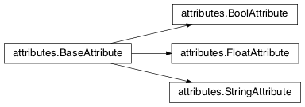
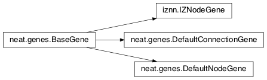
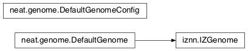
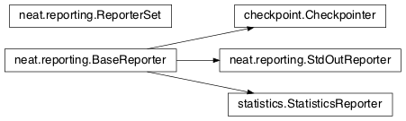

Module summaries¶
Todo
Finish putting in all needed material from modules; add links; go over parameters as used in code to make sure are described correctly.
activations¶
- exception
activations.InvalidActivationFunction(Exception)[source]¶Exception called if an activation function being added is invalid according to the
validate_activationfunction.
activations.validate_activation(function)[source]¶Checks to make sure its parameter is a function that takes a single argument. TODO: Currently raises a deprecation warning due to changes in
inspect.
Parameters: function (object) – Object to be checked. Raises: InvalidActivationFunction – If the object does not pass the tests.
attributes¶

- class
attributes.BaseAttribute(name)[source]¶Superclass for the type-specialized attribute subclasses, used by genes (such as via the
DefaultGeneimplementation).
- class
attributes.FloatAttribute(BaseAttribute)[source]¶Class for numeric attributes such as the response of a node; includes code for configuration, creation, and mutation.
- class
attributes.BoolAttribute(BaseAttribute)[source]¶Class for boolean attributes such as whether a connection is enabled or not; includes code for configuration, creation, and mutation.
- class
attributes.StringAttribute(BaseAttribute)[source]¶Class for string attributes such as the aggregation function of a node, which are selected from a list of options; includes code for configuration, creation, and mutation.
checkpoint¶
- class
checkpoint.Checkpointer(generation_interval=100, time_interval_seconds=300)[source]¶A reporter class that performs checkpointing using
pickleto save and restore populations (and other aspects of the simulation state). It saves the current state everygeneration_intervalgenerations ortime_interval_secondsseconds, whichever happens first. SubclassesBaseReporter. (The potential save point is at the end of a generation.)
Parameters:
- static
save_checkpoint(config, population, species, generation)[source]¶Saves the current simulation (including randomization) state to
neat-checkpoint-generation, withgenerationbeing the generation number.
- static
restore_checkpoint(filename)[source]¶Resumes the simulation from a previous saved point. Loads the specified file, sets the randomization state, and returns a
Populationobject set up with the rest of the previous state.
Parameters: filename (str) – The file to be restored from. Returns: Object that can be used with Population.runto restart the simulation.Return type: Populationobject.
Todo
Put in links to the customization page.
config¶
- class
config.ConfigParameter(name, value_type)[source]¶Does initial handling of a particular configuration parameter.
Parameters:
config.write_pretty_params(f, config, params)[source]¶Prints configuration parameters to
fileobject f.
- class
config.Config(genome_type, reproduction_type, species_set_type, stagnation_type, filename)[source]¶A simple container for user-configurable parameters of NEAT. The four parameters ending in
_typemay be the built-in ones or user-provided objects, which must make available the methodsparse_configandwrite_config, plus others depending on which object it is.Configitself takes care of theNEATparameters. For a description of the configuration file, see Configuration file description.
Parameters:
- genome_type (object) – Specifies the genome class used, such as
DefaultGenomeoriznn.IZGenome. See Genome Interface for the needed interface.- reproduction_type (object) – Specifies the reproduction class used, such as
DefaultReproduction. See Reproduction Interface for the needed interface.- species_set_type (object) – Specifies the species set class used, such as
DefaultSpeciesSet.- stagnation_type (object) – Specifies the stagnation class used, such as
DefaultStagnation.- filename (str) – Pathname for configuration file to be opened, read, processed by a parser from the
configparsermodule, theNEATsection handled byConfig, and then other sections passed to theparse_configmethods of the appropriate classes.Raises: AssertionError – If any of the objects lack a
parse_configmethod.
save(filename)[source]¶Opens the specified file for writing (not appending) and outputs a configuration file from the current configuration. Uses
write_pretty_params()for theNEATparameters and the appropriate classwrite_configmethods for the other sections.
Parameters: filename (str) – The configuration file to be written.
Todo
Give more information about parameters for ctrnn.
ctrnn¶
- class
ctrnn.CTRNNNodeEval(time_constant, activation, aggregation, bias, response, links)[source]¶Sets up the basic Continuous-time recurrent neural network implementation nodes.
- class
ctrnn.CTRNN(inputs, outputs, node_evals)[source]¶Sets up the Continuous-time recurrent neural network implementation network itself.
reset()[source]¶Resets the time and all node activations to 0 (necessary due to otherwise retaining state via recurrent connections).
..py:method:: advance(inputs, advance_time, time_step=None)
Advance the simulation by the given amount of time, assuming that inputs are constant at the given values during the simulated time.
param list inputs: The values for the input nodes. param float advance_time: How much time to advance the network before returning the resulting outputs. param float time_step: How much time per step to advance the network; the default of Nonewill currently result in an error, but it is planned to determine it automatically.return: The values for the output nodes. rtype: list
- static
create(genome, config, time_constant)[source]¶Receives a genome and returns its phenotype (a
CTRNN). Thetime_constantis used for theCTRNNNodeEvalinitializations.
genes¶

- class
genes.BaseGene(key)[source]¶Handles functions shared by multiple types of genes (both node and connection), including crossover and calling mutation methods.
Parameters: key (int) – The gene identifier. For connection genes, determining whether they are homologous (for genomic distance determination) uses the identifiers of the connected nodes, not the connection gene’s identifier.
- class
genes.DefaultNodeGene(BaseGene)[source]¶Groups
attributesspecific to node genes (of the usually-used type) and calculates genetic distances between two homologous (not disjoint or excess) node genes.
distance(other, config)[source]¶Determines weight of differences between node genes using their 4 attributes; the final result is multiplied by the configured compatibility_weight_coefficient.
Parameters: Returns: The contribution of this pair to the genomic distance between the source genomes.
Return type:
- class
genes.DefaultConnectionGene(BaseGene)[source]¶Groups
attributesspecific to connection genes and calculates genetic distances between two homologous (not disjoint or excess) connection genes.
distance(other, config)[source]¶Determines weight of differences between connection genes using their 2 attributes; the final result is multiplied by the configured compatibility_weight_coefficient.
Parameters: Returns: The contribution of this pair to the genomic distance between the source genomes.
Return type:
Todo
Explain more regarding parameters, required functions of the below; put in links referencing genome-interface.
genome¶

- class
genome.DefaultGenomeConfig(params)[source]¶Does the configuration for the DefaultGenome class.
Parameters: params (dict) – Parameters from configuration file and DefaultGenome initialization (by parse_config).
- class
genome.DefaultGenome(key)[source]¶The provided genome class. For class requirements, see Genome Interface.
Parameters: key (int) – Identifier for this individual/genome.
- classmethod
parse_config(param_dict)[source]¶Required interface method. Provides default node and connection gene specifications (from
genes) and usesDefaultGenomeConfigto do the rest of the configuration.
Parameters: param_dict (dict) – Dictionary of parameters from configuration file. Returns: Configuration object; considered opaque by rest of code, so type may vary by implementation (here, a DefaultGenomeConfiginstance).Return type: object
- classmethod
write_config(f, config)[source]¶Required interface method. Saves configuration using
DefaultGenomeConfig.
Parameters:
- f (file) – File object to write to.
- config (object) – Configuration object (here, a
DefaultGenomeConfiginstance).
configure_new(config)[source]¶Required interface method. Configures a new genome (itself) based on the given configuration object.
configure_crossover(genome1, genome2, config)[source]¶Required interface method. Configures a new genome (itself) by crossover from two parent genomes.
distance(other, config)[source]¶Required interface method. Returns the genomic distance between this genome and the other. This distance value is used to compute genome compatibility for
speciation. Uses theDefaultNodeGene.distance()andDefaultConnectionGene.distance()methods for homologous pairs, and the configured compatibility_disjoint_coefficient for disjoint/excess genes.
Parameters: Returns: The genomic distance.
Return type:
graphs¶
graphs.creates_cycle(connections, test)[source]¶Returns true if the addition of the
testconnection would create a cycle, assuming that no cycle already exists in the graph represented byconnections. Used to avoid recurrent networks when a purely feed-forward network is desired (e.g., as determined by thefeed_forwardsetting in the configuration file.
Parameters: Returns: True if a cycle would be created; false if not.
Return type:
graphs.required_for_output(inputs, outputs, connections)[source]¶Collect the nodes whose state is required to compute the final network output(s).
Parameters:
- inputs (list(int)) – the input identifiers; it is assumed that the input identifier set and the node identifier set are disjoint.
- outputs (list(int)) – the output node identifiers; by convention, the output node ids are always the same as the output index.
- connections (list(tuple(int, int))) – list of (input, output) connections in the network; should only include enabled ones.
Returns: A list of layers, with each layer consisting of a set of node identifiers.
Return type:
graphs.feed_forward_layers(inputs, outputs, connections)[source]¶Collect the layers whose members can be evaluated in parallel in a feed-forward network.
Parameters: Returns: A list of layers, with each layer consisting of a set of identifiers; only includes nodes returned by required_for_output.
Return type:
indexer¶
Todo
Add methods for the below.
iznn¶
This module implements a spiking neural network. Neurons are based on the model described by:
Izhikevich, E. M.
Simple Model of Spiking Neurons
IEEE TRANSACTIONS ON NEURAL NETWORKS, VOL. 14, NO. 6, NOVEMBER 2003
See http://www.izhikevich.org/publications/spikes.pdf.

- class
iznn.IZNodeGene(BaseGene)[source]¶Contains attributes for the iznn node genes and determines genomic distances.
- class
iznn.IZGenome(DefaultGenome)[source]¶Contains the parse_config class method for iznn genome configuration.
- class
iznn.IZNeuron(bias, a, b, c, d, inputs)[source]¶Sets up and simulates the iznn nodes (neurons).
Parameters:
- bias (float) – The bias of the neuron.
- a (float) – The time scale of the recovery variable.
- b (float) – The sensitivity of the recovery variable.
- c (float) – The after-spike reset value of the membrane potential.
- d (float) – The after-spike reset of the recovery variable.
- inputs (list(tuple(int, float))) – A list of (input key, weight) pairs for incoming connections.
- class
iznn.IZNN(neurons, inputs, outputs)[source]¶Sets up the network itself and simulates it using the connections and neurons.
Parameters:
- neurons (list) – The IZNeuron instances needed.
- inputs (list(int)) – The input node keys.
- outputs (list(int)) – The output node keys.
set_inputs(inputs)[source]¶Assigns input voltages.
Parameters: inputs (list(float)) – The input voltages for the input nodes.
get_time_step_msec()[source]¶Returns a suggested time step; currently hardwired to 0.05 - investigation of this (particularly effects on numerical stability issues) is planned.
Returns: Suggested time step in milliseconds. Return type: float
math_util¶
nn.feed_forward¶
- class
nn.feed_forward.FeedForwardNetwork(inputs, outputs, node_evals)[source]¶A straightforward (no pun intended) feed-forward neural network NEAT implementation.
Parameters:
activate(inputs)[source]¶Feeds the inputs into the network and returns the resulting outputs.
Parameters: inputs (list) – The values for the input nodes. Returns: The values for the output nodes. Return type: list
- static
create(genome, config)[source]¶Receives a genome and returns its phenotype (a
FeedForwardNetwork).
nn.recurrent¶
- class
nn.recurrent.RecurrentNetwork(inputs, outputs, node_evals)[source]¶A recurrent (but otherwise straightforward) neural network NEAT implementation.
Parameters:
reset()[source]¶Resets all node activations to 0 (necessary due to otherwise retaining state via recurrent connections).
activate(inputs)[source]¶Feeds the inputs into the network and returns the resulting outputs.
Parameters: inputs (list) – The values for the input nodes. Returns: The values for the output nodes. Return type: list
- static
create(genome, config)[source]¶Receives a genome and returns its phenotype (a
RecurrentNetwork).
parallel¶
- class
parallel.ParallelEvaluator(num_workers, eval_function, timeout=None)[source]¶Runs evaluation functions in parallel subprocesses in order to evaluate multiple genomes at once.
Parameters:
- num_workers (int) – How many workers to have in the
Pool.- eval_function (function) – eval_function should take one argument (a genome object) and return a single float (the genome’s fitness)
- timeout (int or None) – How long (in seconds) each subprocess will be given before an exception is raised (unlimited if
None).
Todo
Put in more about calls to rest of program?
population¶
- exception
population.CompleteExtinctionException[source]¶Raised on complete extinction (all species removed due to stagnation) unless reset_on_extinction is set.
- class
population.Population(config, initial_state=None)[source]¶This class implements the core evolution algorithm: 1. Evaluate fitness of all genomes. 2. Check to see if the termination criterion is satisfied; exit if it is. 3. Generate the next generation from the current population. 4. Partition the new generation into species based on genetic similarity. 5. Go to 1.
Parameters:
run(fitness_function, n=None)[source]¶Runs NEAT’s genetic algorithm for at most n generations. If n is
None, run until solution is found or extinction occurs.The user-provided fitness_function must take only two arguments: 1. The population as a list of (genome id, genome) tuples. 2. The current configuration object.
The return value of the fitness function is ignored, but it must assign a Python
floatto thefitnessmember of each genome.The fitness function is free to maintain external state, perform evaluations in :py:mod::
parallel, etc.It is assumed that the fitness function does not modify the list of genomes, the genomes themselves (apart from updating the fitness member), or the configuration object.
Parameters: Returns: The best genome seen.
Return type:
reporting¶

- class
reporting.ReporterSet[source]¶Keeps track of the set of reporters and gives functions to dispatch them at appropriate points.
- class
reporting.BaseReporter[source]¶Definition of the reporter interface expected by ReporterSet. Inheriting from it will provide a set of
dummymethods to be overridden as desired, as follows.
start_generation(generation)[source]¶Called (by
Population.run()) at the start of each generation, prior to the invocation of the fitness function.
Parameters: generation (int) – The generation number.
end_generation(config, population, species)[source]¶Called (by
Population.run()) at the end of each generation, after reproduction and speciation.
Parameters:
post_evaluate(config, population, species, best_genome)[source]¶Called (by
Population.run()) after the fitness function is finished.
Parameters:
- config (object) –
Configconfiguration object.- population (dict(int, object)) – Current population, as a dict of unique genome ID/key vs genome.
- species (object) – Current species set object, such as a
DefaultSpeciesSet.- best_genome (object) – The currently highest-fitness genome. Ties are resolved pseudorandomly (by
Dictionary displaysordering).
post_reproduction(config, population, species)[source]¶Not currently called, either by
Population.run()or byDefaultReproduction. Note: New members of the population likely will not have a set species.
complete_extinction()[source]¶Called (by
Population.run()) if complete extinction (due to stagnation) occurs, prior to (depending on the reset_on_extinction configuration setting) a new population being created or aCompleteExtinctionExceptionbeing raised.
found_solution(config, generation, best)[source]¶Called (by
Population.run()) prior to exiting if the configured fitness threshold is met. (Note: Not called upon reaching the generation maximum and exiting for this reason.)
Parameters:
- config (object) –
Configconfiguration object.- generation (int) – Generation number.
- best (object) – The currently highest-fitness genome. Ties are resolved pseudorandomly (by
Dictionary displaysordering).
species_stagnant(sid, species)[source]¶Called (by py:meth:
DefaultReproduction.reproduce) for each species considered stagnant by the stagnation class (such asDefaultStagnation).
Parameters:
Todo
Add links to configuration file.
reproduction¶
- class
reproduction.DefaultReproduction(config, reporters, stagnation)[source]¶Handles creation of genomes, either from scratch or by sexual or asexual reproduction from parents. Implements the default NEAT-python reproduction scheme: explicit fitness sharing with fixed-time species stagnation. For class requirements, see Reproduction Interface.
Parameters:
- classmethod
parse_config(param_dict)[source]¶Required interface method. Provides defaults for
elitism,survival_threshold, andmin_species_sizeparameters and updates them from the configuration file.
Parameters: param_dict (dict) – Dictionary of parameters from configuration file. Returns: Configuration object; considered opaque by rest of code, so current type returned is not required for interface. Return type: dict
- classmethod
write_config(f, param_dict)[source]¶Required interface method. Saves
elitismandsurvival_threshold(but notmin_species_size) parameters to new config file.
Parameters:
- f (file) – File object to write to.
- param_dict (dict) – Dictionary of current parameters in this implementation; more generally, reproduction config object.
create_new(genome_type, genome_config, num_genomes)[source]¶Required interface method. Creates
num_genomesnew genomes of the given type using the given configuration. Also initializes ancestry information (empty tuple).
Parameters: Returns: A dictionary (with the unique genome identifier as the key) of the genomes created.
Return type:
- static
compute_spawn(adjusted_fitness, previous_sizes, pop_size, min_species_size)[source]¶Apportions desired number of members per species according to fitness (adjusted by
reproduce()to a 0-1 scale) from out of the desired population size.
Parameters:
- adjusted_fitness (list(float)) – Mean fitness for species members, adjusted to 0-1 scale.
- previous_sizes (list(int)) – Number of members of species in population prior to reproduction.
- pop_size (int) – Desired population size, as input to
reproduce().- min_species_size (int) – Minimum number of members per species; can result in population size being above
pop_size.
reproduce(config, species, pop_size, generation)[source]¶Required interface method. Creates the population to be used in the next generation from the given configuration instance, SpeciesSet instance, desired size of the population, and current generation number. This method is called after all genomes have been evaluated and their
fitnessmember assigned. This method should use the stagnation instance given to the initializer to remove species deemed to have stagnated.
Parameters:
- config (object) – A
Configinstance.- species (object) – A
SpeciesSetinstance. As well as depending on some of theDefaultStagnationinternals, this method also depends on some of those of theSpeciesSetand its referenced species objects.- pop_size (int) – Population size desired.
- generation (int) – Generation count.
Returns: New population, as a dict of unique genome ID/key vs genome.
Return type:
six_util¶
This Python 2/3 portability code was copied from the six module to avoid adding it as a dependency.
six_util.iterkeys(d, **kw)[source]¶This function returns an iterator over the keys of dict d.
Parameters:
- d (dict) – Dictionary to iterate over
- kw – The function of this parameter is unclear.
species¶
- class
species.Species(key, generation)[source]¶Represents a species and contains data about it such as members, fitness, and time stagnating (note: :py:class::
DefaultStagnationmanipulates many of these).
Parameters:
- class
species.GenomeDistanceCache(config)[source]¶Caches genomic distance information to avoid repeated lookups (the
distance functionis among the most time-consuming parts of the library, although most fitness functions are likely to far outweigh this). Called as a method with a pair of genomes to retrieve the distance.
- class
species.DefaultSpeciesSet(config, reporters)[source]¶Encapsulates the default speciation scheme by configuring it and performing the speciation function (placing genomes into species by genetic similarity).
DefaultReproductioncurrently depends on this having aspeciesattribute consisting of a dictionary of species keys to species.
Parameters:
- config (object) – A configuration object (currently unused).
- reporters (object) – A
ReporterSetinstance giving reporters to be notified about genomic distance statistics.
- classmethod
parse_config(param_dict)[source]¶Required interface method. Currently, the only configuration parameter is the compatibility_threshold.
Parameters: param_dict (dict(str, str)) – Dictionary of parameters from configuration file. Returns: Configuration object; considered opaque by rest of code, so current type returned is not required for interface. Return type: dict
- classmethod
write_config(f, param_dict)[source]¶Required interface method. Writes parameter(s) to new config file.
Parameters:
- f (file) – File object to write to.
- param_dict (dict) – Dictionary of current parameters in this implementation; more generally, stagnation config object.
speciate(config, population, generation)[source]¶Required interface method. Place genomes into species by genetic similarity (genomic distance). (The current code has a
docstringstating that there may be a problem if all old species representatives are not dropped for each generation; it is not clear how this is consistent with the code inDefaultReproduction.reproduce(), such as forelitism.)
Parameters:
get_species_id(individual_id)[source]¶Required interface method (used by
StdOutReporter). Retrieves species id for a given genome id.
Parameters: individual_id (int) – Genome id/key. Returns: Species id/key. Return type: int
get_species(individual_id)[source]¶Retrieves species object for a given genome id. May become a required interface method, and useful for some fitness functions already.
Parameters: individual_id (int) – Genome id/key. Returns: Speciescontaining the genome corresponding to the id/key.Return type: object
Todo
Add more methods to the below for DefaultStagnation; try to figure out which ones are required interface methods; links re config file.
stagnation¶
- class
stagnation.DefaultStagnation(config, reporters)[source]¶Keeps track of whether species are making progress and helps remove ones that, for a configurable number of generations, are not.
Parameters:
- config (object) – Configuration object; in this implementation, a
dictionary, but should be treated as opaque outside this class.- reporters (class) – A
ReporterSetwith reporters that may need activating; not currently used.
- classmethod
parse_config(param_dict)[source]¶Required interface method. Provides defaults for
species_fitness_func,max_stagnation, andspecies_elitismparameters and updates them from the configuration file.
Parameters: param_dict (dict(str, str)) – Dictionary of parameters from configuration file. Returns: Configuration object; considered opaque by rest of code, so current type returned is not required for interface. Return type: dict
- classmethod
write_config(f, param_dict)[source]¶Required interface method. Saves parameters to new config file. Has a default of 15 for species_elitism, but will be overridden by the default of 0 in parse_config.
Parameters:
- f (file) – File object to write to.
- param_dict (dict) – Dictionary of current parameters in this implementation; more generally, stagnation config object.
Todo
Give more information about what is available from the below.
statistics¶
- class
statistics.StatisticsReporter(BaseReporter)[source]¶Gathers (via the reporting interface) and provides (to callers and/or to a file) information on genome and species fitness, which are the most-fit genomes, etc. Note: Keeps accumulating information in memory currently, which may be a problem in long runs.